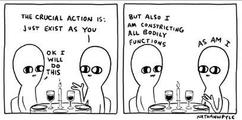

Years ago while in an important business meeting, crowded with higher-ups, a client laughed at a joke. Which caused her to let loose... a fart. A loud, un-ignorable one.
Telling the story all this time later, her face still turns red.
Another friend wanted to impress someone, and in front of him she tripped and tumbled into a puddle, ending up covered head to toe in mud. She impressed him alright.
Another friend did a TV interview and suddenly her old stutter came back. Live. With hundreds of thousands of people watching,
Oh the shame.
The bad skin, the freckles, the excess body hair in weird places. The buttons opened, the zipper down, the dress hiked up. Clapping alone and calling “Bravo!” when the concert isn’t over. Saying ‘Love you!’ instead of “See ya!” to a stranger. Spectacularly missing the ball when the whole team is watching and counting on you to win the game.
Who hasn’t experienced stories like this? No one that’s who.
And what do these stories all have in common?
I mean, besides the why-isn’t-the-ground-swallowing-me-right-now part.
Well for one thing, everyone thinks it's our fault that these things happen. We should have known. We should have stopped it. We shouldn't be so strange, stupid, clumsy, wrong. We should have done better.
As if we missed that ball on purpose. As if we chose to fart like a trumpet in front of the big boss.
It was our job to stop it, and we blew it.
So to speak.
These situations all appear to be mighty darn personal.
Even though they happen precisely when we don't have the power or the responsibility we think we’re somehow supposed to have.
So clearly it’s not personal. Even though we think it is.
Because we can't stop it. Lord knows we would if we could.
I mean, watch the high-falutin spiritual concept of, “I’m not the doer” go right out the window in these situations.
While our obvious lack of jurisdiction threatens to expose that we are just powerless nothings that can’t control anything.
Which is part of what we’re ashamed of -- the lack of control itself.
And then, for added fun, there's more.
Because to get a good shame going, we have to be caught not having control.
Others have to see our lack of power. Which is why a loud fart when we’re alone in the car is no problem.
No witness, no shame.
Being seen is what brings the red face.
Being exposed. As powerless. In prime time.
Oh the self hates it so much.
It hates being seen to be nothing.
Because there's no putting that back in the hat. The bunny gets out. And it poops on everything- on the sense of control, the sense of self, the image, the presentation, the pretense that we’re a person in control of our body, our story, our world.
Everything in danger of vanishing.
Dammit.
To hell with all this enlightenment-seeking, lose-the-ego, see-through-the-self stuff. Bring on the high barricades and heavy-duty protection.
Enter shame.
“OMG look what I just did!” we say, taking credit for having done... something. And the Me turns red, cringes and wishes for a quick death.
While actually being secretly delighted.
Because in that moment, the hard-won, mind-created world is in zero jeopardy of being seen through.
Because we are far too busy dealing with shame.
Mission accomplished.
On the plus side, this is potentially good news for those hoping to experience what many call "enlightenment."
Because when we begin to get a glimmer that the situation itself is a front, the Me is a front, and the intense feeling of shame is a front and a cover-up…
When we can look behind any of this for even the merest moment,
We might begin to see that there’s simply
Nothing
There
Behind the facade.
Which is such a surprising relief,
And requires no face.
Red or otherwise.
"You’re only making a mess by trying to put things straight. You’re trying to straighten out a wiggly world and no wonder you’re in trouble." --Alan Watts
Click here to get your every week.
